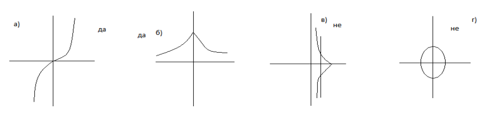

Дефиниција на функција
Вежба 1. Нека е дадена функцијата `y = 1 + sqrt(x)`
`4 = 1 + sqrt(x)`
`4 - 1 = sqrt(x)`
`3 = sqrt(x)`
`x = 9`
`■`
`0 = 1 + sqrt(x)`
`-1 = sqrt(x)`
`■`
`4 <= 1 + sqrt(x)`
`3 <= sqrt(x)`
`x >= 9`
`■`
`■`
а) Да се определи за кои вредности на `x, y = 4`
Решение
Решение
Решение
Решение
`y = 1 + sqrt(0) => y = 1 + 0 => y = 1`
Тест со вертикални прави
Вежба 1. За секоја од сликите да се одреди дали графикот дефинира функција од x.
Да се искористи тестот се вертикална права според кој:
Крива во `x` `y` - рамнината е график на некоја функција `f` ако и само ако не постои вертикална
права која што ја сече кривата во повеќе од една точка.
`■`

Решение
Функцијата апсолутна вредност
Не е најдена вжба .../p>
Функции дефинирани по делови
Вежба 1. Да се дефинира функцијата по делови без користење на апсолутна вредност.
`{(x + 3 +1 , x >= 0),(-x + 3 + 1, x < 0):}`
`■`
`{(3x - 6 - x - 1, x >= 0), (-3x + 6 + x + 1 , x < 0):}`
`{(4x - 7, x >= 0),(-2x + 7, x < 0):}`
`■`
а) `f(x) = abs(x) + 3 + 1`
Решение
Решение
Вежба 2. Тргнувајќи на пладне авионот А лета 2400 милји од Њујорк до Сан Франциско со брзина
од 400 милји на час. Авионот В го започнува истото патување во 14:00 часот со брзина
800 милји на час.
Od 12:00 до 14:00 растојанието (функцијата) помеѓу А и B зависи само од авионот A. Во овој временски интервал
функцијата може да ја запишеме `y = 400x`
Растојанието до San Francisco авионот А ќе го помине за 2400/400 = 6 часа односно ќе пристигне во 12:00 + 6:00 =
18:00.
Растојанието до San Francisco авионот B ќе го помине за 2400/800 = 3 часа односно ќе пристигне во 14:00 + 3:00 =
17:00.
Во временскиот период од 14:00 до 17:00 функцијата може да ја запишеме како `y = abs(400x -800(x-2))`.
Со средување се добива:
`y = {(400x, x in [0, 2]), (400abs(4 - x), x in (2, 5]):}`
`■`
`0 = 1 + sqrt(x)`
`-1 = sqrt(x)`
`■`
`4 <= 1 + sqrt(x)`
`3 <= sqrt(x)`
`x >= 9`
`■`
Домен на функцијата е `D_f = [0, +oo)`
Најмала вредност функцијата има за `x = 0`
`y = 1 + sqrt(0)`
`y = 1 + 0`
`y = 1`
Интервалот на доменот на функцијата е отворен така да функцијата нема најголема вредност.
`■`
Да се изрази растојанието помеѓу А и В во било кој момент помеѓу 12:00 и 17:00 часот преку бројот на часови
кои поминале од пладне.
Решение
Решение
Решение
Решение
Домен на функција
Вежба 1 Да се одреди доменот и рангот на функцијата `y = sqrt x` за `x >= 3`
`D_f = [3, +oo)`
`R_f = [sqrt 3, +oo)`
`■`
Решение
Вежба 2 Да се определи доменот на функциите:
Функцијата не е дефинирана за вредноста `0` на именителот односно корените на квадратната функција во иментелот.
Потребно е да се најдат корените на квадратната функција `x^2 - x - 6`
`x_(1,2) = (-b+- sqrt(b^2 - 4ac))/(2a)`
`x_(1,2) = (1+- sqrt(1 - 4*1*(-6)))/(2*1)`
`x_(1,2) = (1+- 5)/ 2`
`x_1 = -2; x_2 = 3`
`D_f = RR \\ {-2, 3}`
`■`
Функцијата не е дефинирана за негативните вредности под корените.
Потребно е да `9-x^2 >=0` и `1 - sqrt(9-x^2) >=0`
`9 - x^2 >= 0`
`-x^2 >= -9 <=> x^2 <= 9 <=> abs(x) <= 3 <=> -3<= x <= 3 <=> D_1 = [-3, 3]`
`1- sqrt(9 - x^2) >=0 <=> sqrt(9 - x^2) <= 1 <=> 9 - x^2 <= 1 <=> x^2 >= 8 <=> x_1 = -2sqrt(2), x_2 = 2sqrt(2)`
`D_2 = (-oo, -2sqrt(2)] uu [2sqrt(2), +oo)`
`D_f = D_1 nn D_2 = [-3, -2sqrt(2)] uu [2sqrt(2), 3]`
`■`
а) `g(x) = (x -1) / (x^2 - x - 6)`
Решение
Решение
Ранг на функција
Вежба 1 Да се определи рангот на функциите:
`x^2 = (1-y)/y`
како `x^2 >=0 <=> (1-y)/y >= 0`
`<=> {(1-y >= 0),(y > 0):}` или `{(1-y <= 0),(y < 0 ):}`
`<=> {(y <= 1 ), ( y > 0):}` или `{(y >= 1), (y < 0):}`
`<=> 0 > y <= 1` или `y in O/`
`<=> R_f = (0, 1]`
`■`
`y = (x^2 +x + 2)/(x^2 -x + 2) <=> yx^2 -xy + 2y = x^2 - x + 2`
`(y-1)x^2 - (y+1)x + 2(y-1) = 0`
За да има оваа равенка решение по x ,потребно и доволно e:
`x_(1,2) = ((y+1) +- sqrt((y + 1)^2 - 8(y-1)(y-1)))/(2(y-1)`
`(y + 1)^2 - 8(y-1)^2 >= 0`
`y^2 + 2y +1 -8y^2 + 16 -8`
`-7y^2 + 18y -7 <=> 7y^2 -18 +7`
`y_(1,2) = (18 +- sqrt(324-196))/14`
`y_(1,2) = (9 +- 4sqrt(2))/7`
`R_f = [(9 + 4sqrt(2))/7, (9 - 4sqrt(2))/7]`
`■`
а) `y = 1/ (1 + x^2)`
Решение
Решение
Вежба 2 Да се објасни зошто `f` има една или повеќе „дупки” во својот график и да се најдат
вредностите на `x` за кои се појавуваат тие „дупки”. Да се определи функција `g` чиј график е ист со графикот
на `f`, но е без „дупки”.
Функцијата не е дефинирана во точките `x = -2`, и `x = 1`
Со упростување со скратување на заедничките множители во броителот и именителот ќе се промени доменот а со
тоа и самата функција. Функиите ќе бидат со ист график.
`f(x) = ((x +2 )(x - 1)(x + 1))/((x + 2)(x - 1))`
`f(x) = x + 1 <=> g(x) = x + 1`
а) `f(x) = ((x + 2)(x^2 - 1))/((x + 2)(x - 1))`
Решение
После повторно пишување на дропките, да се скратат заедничките степени пред да се изврши множењето
`= (5/6) * (22/15)`
`= (1/3) * (11/3)`
`= 11/9`
Што треба да се знае на памет
- Дефиниција: Ако променливата `y` зависи од променливата `x` така што секоја вредност на `x` определува точно една вредност на `y`, тогаш велиме дека `y` е функција од `x`.
- Дефиниција: График на функција `y = f(x`) е множеството точки од `xy`- рамнината од облик `(x, f(x))`, за `x in D_f`
- Дефиниција: Ако y = `f(x)` , тогаш множеството од сите можни влезови (вредности на `x`) се нарекува домен на `f`, а множеството од излези (вредности на `y`)кои се добиваат кога `x` се менува во доменот се нарекува ранг на `f`.
-
Графици на функциите: `y = x`; `x^2`; `x^3`; `1/x` `sqrt(x)`; и `root(3)x`

- Тест со вертикални прави: Крива во `xy` - рамнината е график на некоја функција `f` ако и само ако не постои вертикална права која што ја сече кривата во повеќе од една точка.